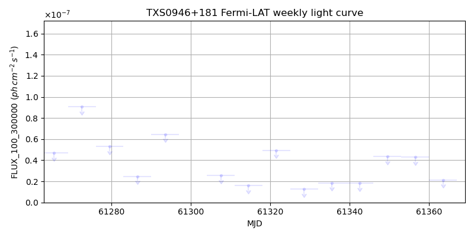
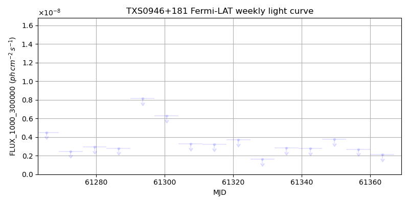

LAT Lightcurve site: https://fermi.gsfc.nasa.gov/ssc/data/access/lat/msl_lc/source/TXS_0946p181
NED: Query
Time of last update of this page: UT: 2026-11-20 16:21 (MJD: 61364.682)
| Property | Value |
|---|---|
| R.A. | 9:49:39.84 |
| Dec. | 17:52:48.0 |
| z | 0.694 |
| 3FGL SpectrumType | |
| 3FGL PL Index | -1.00 |
| 3FGL Flux_100_300000 | -1.00e+00 |
| 3FGL Flux_1000_300000 | -1.00e+00 |
| 3FGL Flux >200 GeV | -1.00e+00 |
| 3FGL Extrap. Crab >200 GeV | -1.00 |
| 3FGL Flux After EBL Absorption >200GeV | -1.00e+00 |
| 3FGL EBL Crab Fraction >200GeV | -1.00 |
| MJD | dMJD | Flux | dFlux | Frac3FGL | FracCrab>200GeV | EBLFracCrab>200GeV |
|---|---|---|---|---|---|---|
| 61359.50 | 0.50 | 6.60e-08 | 0.00e+00 | 0.00 | 0.00 | -0.00 |
| 61360.50 | 0.50 | 1.33e-07 | 0.00e+00 | 0.00 | 0.00 | -0.00 |
| 61361.50 | 0.50 | 2.00e-07 | 0.00e+00 | 0.00 | 0.00 | -0.00 |
| 61362.50 | 0.50 | 7.19e-08 | 0.00e+00 | 0.00 | 0.00 | -0.00 |
| 61363.50 | 0.50 | 4.92e-07 | 0.00e+00 | 0.00 | 0.00 | -0.00 |

| MJD | dMJD | Flux | dFlux | Frac3FGL | FracCrab>200GeV | EBLFracCrab>200GeV |
|---|---|---|---|---|---|---|
| 61328.50 | 3.50 | 1.26e-08 | 0.00e+00 | 0.00 | 0.00 | -0.00 |
| 61335.50 | 3.50 | 1.85e-08 | 0.00e+00 | 0.00 | 0.00 | -0.00 |
| 61342.50 | 3.50 | 1.82e-08 | 0.00e+00 | 0.00 | 0.00 | -0.00 |
| 61349.50 | 3.50 | 4.34e-08 | 0.00e+00 | 0.00 | 0.00 | -0.00 |
| 61356.50 | 3.50 | 4.28e-08 | 0.00e+00 | 0.00 | 0.00 | -0.00 |

| MJD | dMJD | Flux | dFlux | Frac3FGL | FracCrab>200GeV | EBLFracCrab>200GeV |
|---|---|---|---|---|---|---|
| 61359.50 | 0.50 | 1.90e-08 | 0.00e+00 | 0.00 | 0.00 | -0.00 |
| 61360.50 | 0.50 | 1.88e-08 | 0.00e+00 | 0.00 | 0.00 | -0.00 |
| 61361.50 | 0.50 | 2.00e-08 | 0.00e+00 | 0.00 | 0.00 | -0.00 |
| 61362.50 | 0.50 | 1.34e-08 | 0.00e+00 | 0.00 | 0.00 | -0.00 |
| 61363.50 | 0.50 | 1.83e-08 | 0.00e+00 | 0.00 | 0.00 | -0.00 |

| MJD | dMJD | Flux | dFlux | Frac3FGL | FracCrab>200GeV | EBLFracCrab>200GeV |
|---|---|---|---|---|---|---|
| 61328.50 | 3.50 | 1.62e-09 | 0.00e+00 | 0.00 | 0.00 | -0.00 |
| 61335.50 | 3.50 | 2.81e-09 | 0.00e+00 | 0.00 | 0.00 | -0.00 |
| 61342.50 | 3.50 | 2.77e-09 | 0.00e+00 | 0.00 | 0.00 | -0.00 |
| 61349.50 | 3.50 | 3.76e-09 | 0.00e+00 | 0.00 | 0.00 | -0.00 |
| 61356.50 | 3.50 | 2.69e-09 | 0.00e+00 | 0.00 | 0.00 | -0.00 |
--------------------------------------------------------- Using user-supplied coords: 9:49:39.84 17:52:48.0 2000 --------------------------------------------------------- FLWO UT night of: 2026-11-21 Local Sid. @ Midnight: 03:37 Sunset (-15.0) (local, UT): 18:33 01:33 Sunrise (-15.0) (local, UT): 05:47 12:47 Moonrise (local, UT): Moonset (local, UT): 03:40 10:40 Moon phase: 0.85 --------------------------------------------------------- AzTime LSID UT Obj_el Obj_az Mn_el Mn_az Sep. --------------------------------------------------------- 18:33 22:09 01:33 -40.4 5.6 47.9 117.4 132.1 19:03 22:39 02:03 -39.2 14.8 53.3 125.0 131.9 19:33 23:09 02:33 -37.1 23.5 58.2 134.7 131.6 20:03 23:39 03:03 -34.2 31.6 62.3 146.9 131.4 20:33 00:09 03:33 -30.5 38.8 65.1 162.1 131.2 21:03 00:39 04:03 -26.2 45.3 66.3 179.7 131.1 21:33 01:09 04:33 -21.4 51.2 65.4 197.5 130.9 22:03 01:39 05:03 -16.3 56.4 62.9 213.2 130.7 22:33 02:09 05:33 -10.8 61.2 59.0 225.9 130.5 23:03 02:39 06:03 -4.5 65.5 54.2 235.9 130.3 23:33 03:09 06:33 1.2 69.6 48.9 243.9 130.1 00:03 03:39 07:03 7.0 73.4 43.2 250.4 129.8 00:33 04:10 07:33 13.2 77.0 37.3 255.9 129.6 01:03 04:40 08:03 19.4 80.6 31.2 260.7 129.4 01:33 05:10 08:33 25.8 84.2 25.1 265.1 129.2 02:03 05:40 09:03 32.1 88.0 19.0 269.2 128.9 02:33 06:10 09:33 38.5 91.9 12.9 273.0 128.7 03:03 06:40 10:03 44.9 96.3 6.8 276.9 128.4 03:33 07:10 10:33 51.2 101.3 1.0 280.7 128.1 04:03 07:40 11:03 57.4 107.5 -4.9 284.7 127.8 04:33 08:10 11:33 63.4 115.6 -11.1 288.8 127.5 05:03 08:40 12:03 68.9 127.0 -16.8 293.2 127.2 05:33 09:10 12:33 73.4 144.4 -22.3 298.1 126.9 05:47 09:25 12:47 74.9 155.6 -24.8 300.5 126.7 --------------------------------------------------------- Dark hours >55 deg.: 1.94 srcstart (UT): 2026-11-21 10:50 srcend (UT): 2026-11-21 12:46